Rink Cast Manual
Everything Rink Cast does, in the order you'll actually use it — from building your first roster to sending the final recap. This covers Android; an iPhone version is coming once Rink Cast is on the App Store.
1Getting started
There's no account and no login. Rink Cast doesn't ask you to sign up or sign in — install it, and you're using it.
Every new install starts with a free 30-day trial. After that, it continues as a paid subscription — $2.99/month or $19.99/year — billed through the Google Play Store, the same as any other subscription app.
Restoring on a new phone: if you've subscribed before, tap Restore Purchases on the subscription screen to pick it back up on a new device, no new payment required.
Cancelling happens through the Google Play Store, not inside Rink Cast — open the Play Store app, go to Subscriptions, and cancel from there.
If you ever need help with your subscription, open Settings and tap your Support ID to copy it — that's how support identifies your subscription without needing your name or email.
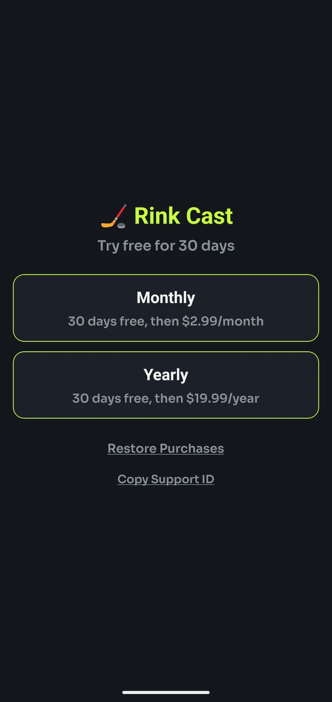
2Creating teams and rosters
- From the Setup screen, tap Manage Teams.
- Tap New Team, give it a name, then add players one at a time with a jersey number and name.
- Tap a team in the list any time to open its roster and add, edit or remove players.
Rosters are saved once and reused for every game — there's no need to re-enter players each time you play the same team.
A team with no players yet shows ⚠ no roster in the teams list instead of a player count, so it's easy to spot one you haven't finished setting up.
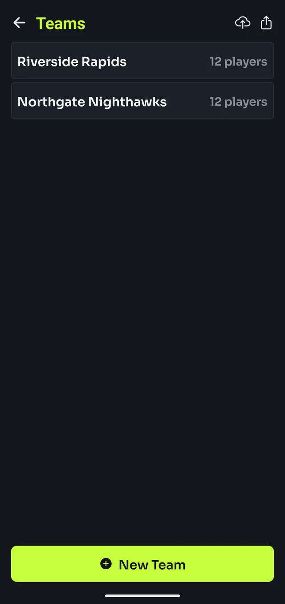
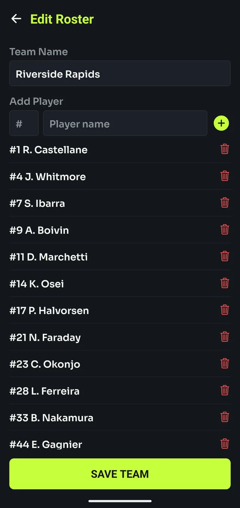
3Exporting, importing and backing up
Read this before you need it. Team rosters live only on your phone. Uninstalling Rink Cast, or clearing its data, deletes them for good — there's no account and no cloud copy to restore from.
Exporting is both your only backup and the only way to move rosters to a new phone.
To export: in Manage Teams, tap the export icon, select the teams you want, then tap Export Selected to share the file, or Download to Device to save it directly.
To import: tap the import icon, choose the exported file, and review the list before confirming.
If an imported team's name or ID matches one you already have, you'll be asked how to resolve it, per team:
- Skip — keep your existing team, ignore the imported one
- Overwrite — replace your existing team with the imported one
- Copy — keep both, adding the imported one under a new name
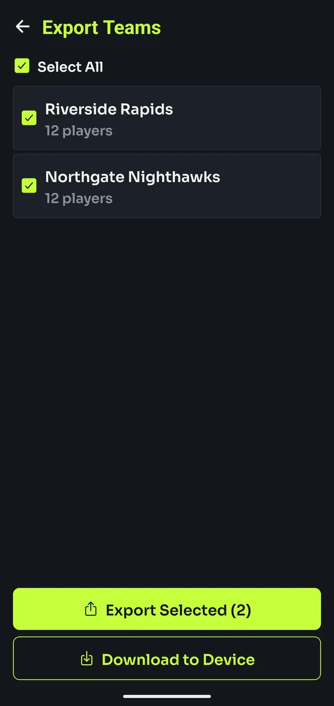
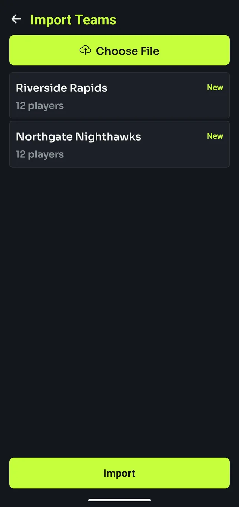
4Settings
Open Settings from the gear icon on the Setup screen.
- Support ID — tap to copy it, for when you need help with your subscription.
- Show announcement credit — toggles a short line added to the end of your game-open and final-summary messages (off by default effect is no line at all).
- Announcement credit — the text itself, up to 60 characters. Defaults to "Sent via Rink Cast," but you can change or clear it.
- How to Use Rink Cast — a quick in-app reference, the same five steps as this manual's short form.
- Replay Welcome Tour — re-shows the four-slide tour from your first launch.
- Reset Hints — brings back the dismissed tips on the Teams and play-builder screens.
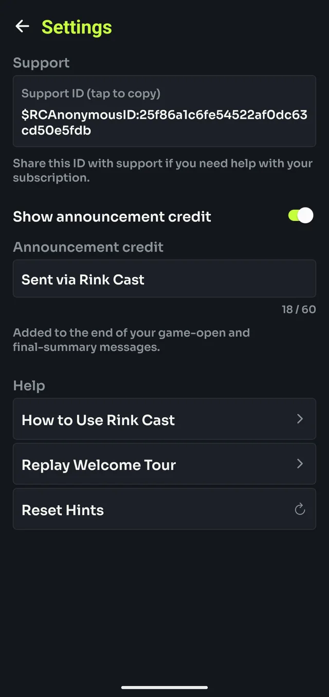
5Starting a game
- On the Setup screen, pick a Home Team and Away Team.
- Tap START GAME.
- Check the pre-game announcement preview, then tap SEND.
Sending that first announcement is what moves you into the live play builder — there's no separate "begin game" step.
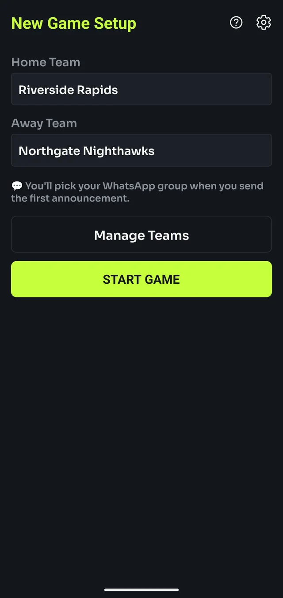
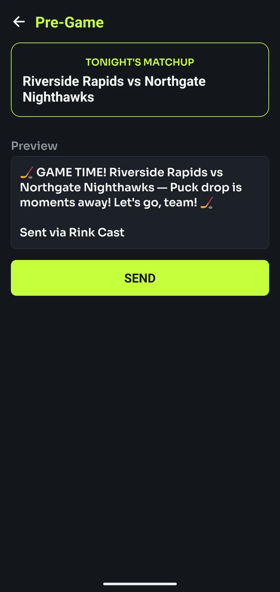
6Where announcements get sent
Rink Cast doesn't have its own messaging — every announcement goes through your phone's normal share sheet, the same menu you'd use to share a photo. That means it works with WhatsApp, Messages, Telegram, Signal, email, or anything else installed, not WhatsApp specifically.
You choose the destination every time you send — nothing is remembered between messages. In practice, most people pick the same team group chat each time, but there's no setting that locks it in.
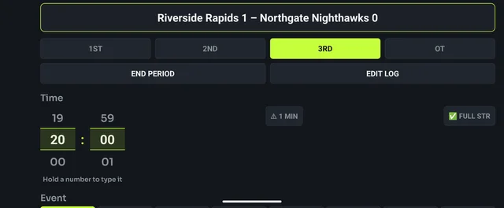
7During the game
Every event follows the same pattern: tap the Event, fill in whatever it needs, check the Preview, then tap SEND.
Goals — tap GOAL, pick the scoring team, then the scorer. Assists are optional, up to two.
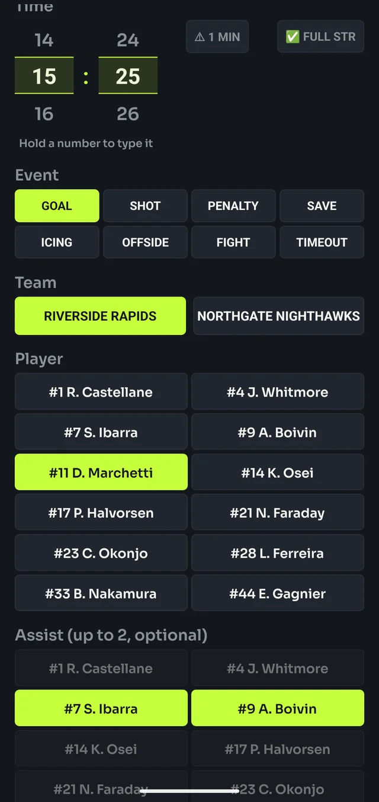
Penalties — tap PENALTY, then a type from the grid (Hooking, Tripping, Roughing, Too Many Players, and more), or tap Other to type one in. Then the team and the player who took it, if known.
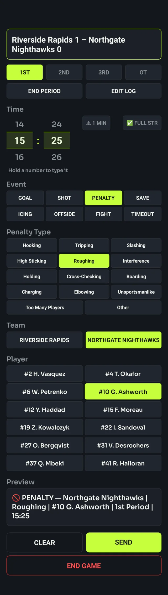
Everything else — Shot, Save, Icing, Offside, Fight and Timeout work the same way: tap the event, pick the team, send.
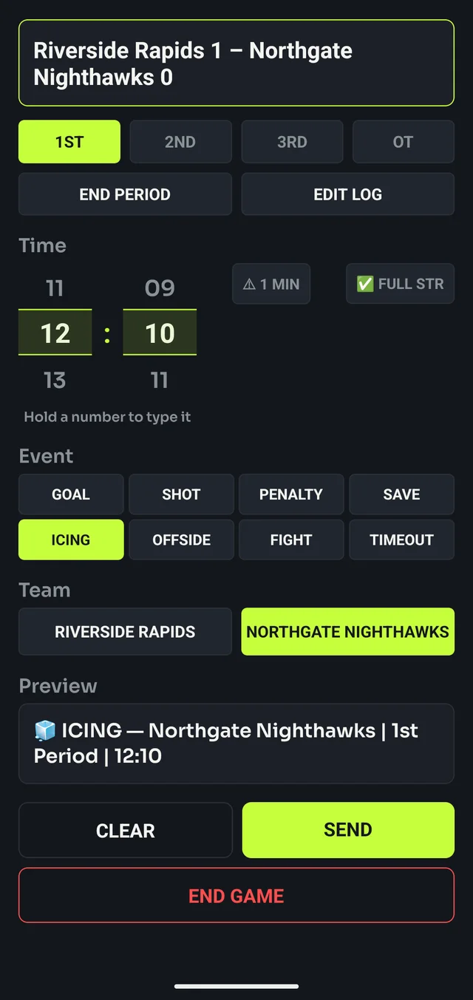
The clock — scroll each wheel to set minutes and seconds, or hold a number to type it directly. ⚠ 1 MIN sends a one-minute-left warning for the current period; ✅ FULL STR announces a return to full strength after a penalty expires.
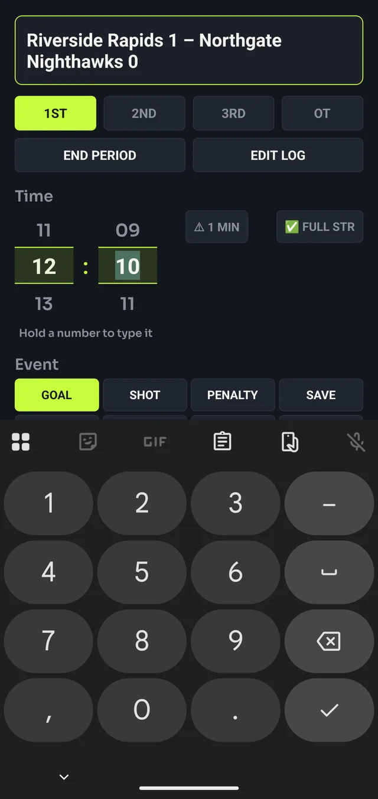
Periods — tap 1ST, 2ND, 3RD or OT to move to it, which sends a "start of period" announcement. END PERIOD sends a recap of that period's goals and penalties before you move on.
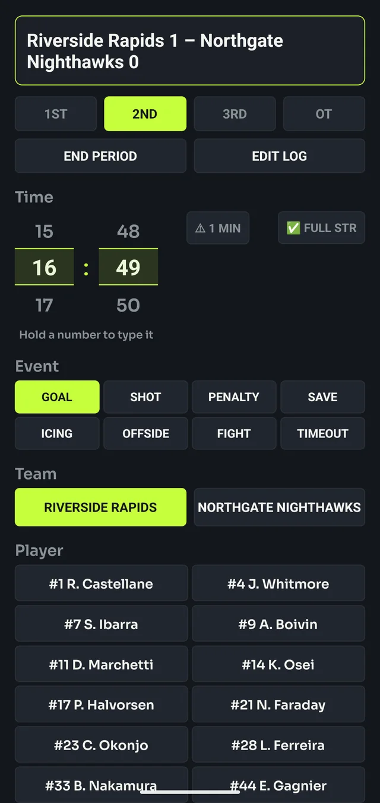
8Fixing mistakes
Tap EDIT LOG above the clock to see every goal and penalty logged so far. Swipe an entry left to reveal a delete button — removing it updates the score and final summary to match, as if it never happened.
There's no "undo send," though: deleting an entry only fixes the game record inside Rink Cast, not a message that's already gone out. If you sent something wrong, a quick correction message in the chat is still the fastest fix for anyone already reading along.
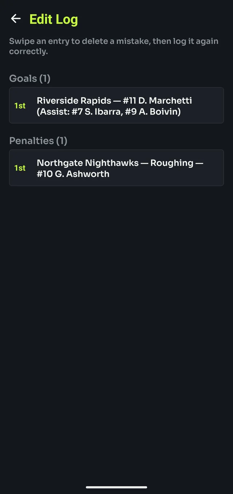
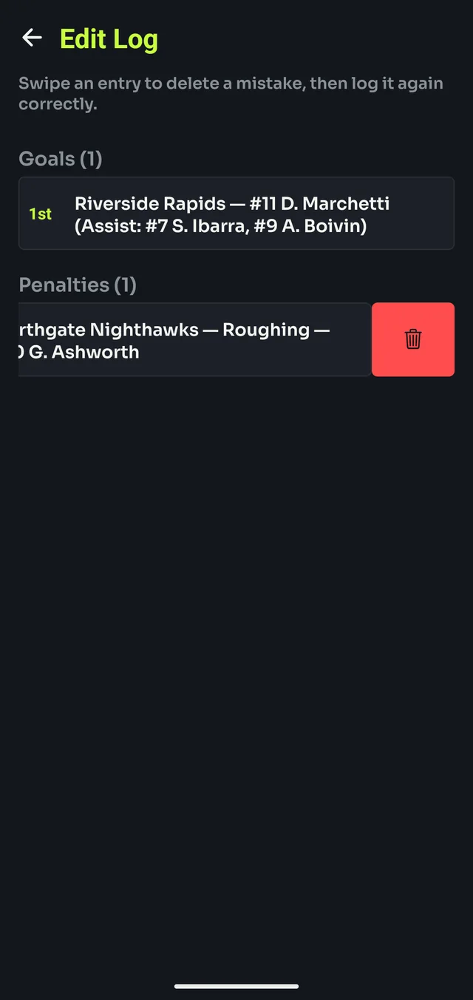
9Finishing the game
- Tap END GAME on the play builder.
- Review the final score and the full list of goals and penalties.
- Tap SEND SUMMARY to share the recap.
Sending the summary also resets Rink Cast back to the Setup screen, ready for the next game.
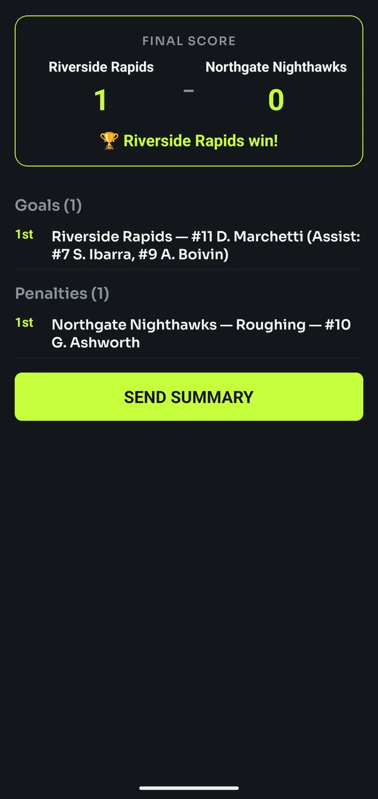
10Example feed
Here's what a full game looks like once it's landed in a group chat — the pre-game announcement, a goal, a penalty, an icing call, each period ending, and the final recap.
Messages carry their own period and game-clock time, so even if a few arrive in a burst after a spell with no signal (see Using it at the rink), the story still reads in the right order.
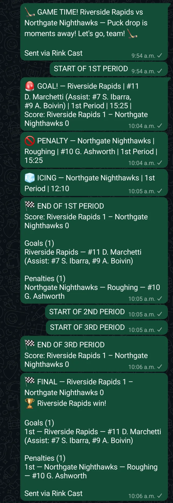
11Resuming an interrupted game
A call, a dead battery, or an accidental swipe won't cost you the game. The next time Rink Cast opens with a game still in progress, it asks:
Resume — picks back up exactly where you left off: score, period, clock, and every goal and penalty so far.
Delete — discards it and starts fresh. This can't be undone, so use Resume unless you're sure.
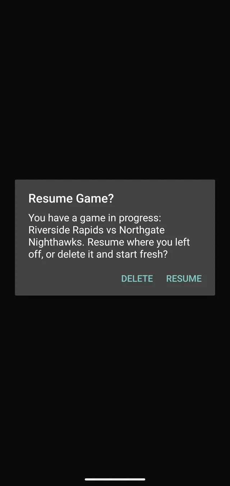
12Using it at the rink
Landscape works — hold the phone either way; Rink Cast follows.
Rink Cast itself needs no connection once it's been opened online at least once — calling a game, editing the log, all of it works offline.
Sending still needs your chat app to have a connection eventually. With no signal, an announcement is handed off and queues in your chat app rather than failing — it sends as soon as the phone reconnects. Followers may get a burst of messages at once rather than live updates, but nothing is lost, and every message already has its period and time on it so the order still makes sense.
Starting a trial, subscribing, or restoring a purchase on a new phone does need a connection — those go through the Play Store.
13Troubleshooting & FAQ
- Download to Device didn't seem to do anything.
- This usually means Rink Cast lost permission to write to the folder you'd previously chosen — often after moving files around, or on a fresh install. Try again and pick the destination folder once more when prompted; that re-grants access. Export Selected (the share option) is a reliable fallback if the problem persists.
- A team shows "⚠ no roster."
- That team has no players yet. Open it from Manage Teams and add at least one before using it in a game — the app doesn't require full rosters, so this is just a heads-up, not a hard block.
- How do I get help with my subscription?
- Open Settings and tap your Support ID to copy it, then include it when you contact support. It identifies your subscription without needing your name, email, or any account.
- I switched phones — how do I get my subscription back?
- Install Rink Cast and tap Restore Purchases on the subscription screen. This needs a connection and works from the same Google account you subscribed with.
- Can I move my teams to a new phone?
- Yes — export them on the old phone, transfer the file however you like (email, cloud storage, a cable), and import it on the new one. See Exporting, importing and backing up.